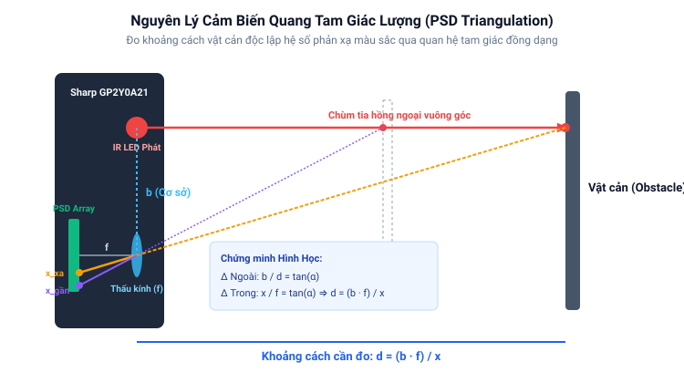

2.1 Bản chất Vật lý của Đo lường & Phân loại Cảm biến
Cảm biến là cầu nối duy nhất giúp bộ não điện tử của robot "chạm" vào thực tại. Trong robot học, cảm biến được phân loại thành 2 cặp tiêu chí cốt lõi:
- Chủ động (Active) vs Bị động (Passive): Cảm biến chủ động tự phát năng lượng vào môi trường rồi thu tín hiệu dội về (như chùm tia hồng ngoại, sóng siêu âm, tia laser LiDAR); cảm biến bị động chỉ đo năng lượng tự nhiên có sẵn (như camera RGB, la bàn từ trường, nhiệt điện trở).
- Nội tại (Proprioceptive) vs Ngoại tại (Exteroceptive): Cảm biến nội tại đo trạng thái bên trong của robot (vận tốc bánh xe qua encoder, gia tốc góc qua IMU, dung lượng pin); cảm biến ngoại tại đo lường môi trường bao quanh (khoảng cách tới vật cản, cường độ ánh sáng phòng).
2.2 Cảm biến Hồng ngoại PSD (Position Sensitive Detector - Triangulation)
Cảm biến hồng ngoại cự ly (như dòng Sharp GP2Y0A21YK) không sử dụng cường độ sáng đơn thuần để tính cự ly (vì màu sắc và độ phản xạ của bề mặt vật cản sẽ làm sai lệch cường độ). Thay vào đó, cảm biến áp dụng nguyên lý Tam giác đạc quang học (Optical Triangulation):

2.3 Cảm biến Siêu âm Thời gian bay ToF (Time-of-Flight)
Cảm biến siêu âm (như HC-SR04 hoặc dòng công nghiệp MaxBotix) phát ra một chùm xung sóng âm tần số cao (thường là $40\text{ kHz}$) và bấm giờ chờ xung phản xạ dội về từ bề mặt vật cản.
Vận tốc truyền sóng âm trong không khí phụ thuộc vào nhiệt độ môi trường theo công thức thực nghiệm:
$$v_{sound}(T) = 331.3 \cdot \sqrt{1 + \frac{T}{273.15}} \approx 331.3 + 0.606 \cdot T \quad (\text{m/s})$$
với $T$ là nhiệt độ tính theo độ Celsius ($^\circ\text{C}$). Khoảng cách được tính bằng:
$$d = \frac{v_{sound} \cdot \Delta t}{2}$$
Lưu ý hiện tượng phản xạ gương (Specular Reflection): Khi sóng âm chạm vào mặt tường phẳng ở góc xiên lớn hơn góc nửa hình nón ($\theta \gt 15^\circ - 30^\circ$), toàn bộ sóng âm dội đi hướng khác thay vì phản xạ lại đầu thu, khiến cảm biến đọc giá trị cực đại giả (vô cực).
2.4 Cảm biến Laser & 2D LiDAR
2D LiDAR (Light Detection and Ranging) quay một chùm tia laser hồng ngoại với tốc độ cao ($5 - 15\text{ Hz}$), đo cự ly bằng ToF quang học ($c \approx 3 \times 10^8\text{ m/s}$) hoặc dịch pha điều chế tần số. Kết quả quét tạo thành một mảng điểm cực (Polar Scan Array) gồm các cặp góc - cự ly $(\theta_i, r_i)$, tạo nên "đôi mắt" quan trọng nhất cho thuật toán lập bản đồ SLAM.
2.5 Bộ giải mã xung quang học (Optical Encoders)
Encoder gắn trên trục động cơ biến đổi chuyển động quay thành chuỗi xung điện áp nhị phân vuông. Cơ cấu gồm đĩa quay có vạch trong suốt xen kẽ vạch mờ quang, nguồn LED phát và cặp cảm biến quang điện A và B bố trí lệch pha $90^\circ$ (Quadrature Encoding):
- Đo chiều quay: Dựa vào trạng thái tín hiệu: nếu kênh A dẫn trước kênh B, trục quay theo chiều kim đồng hồ; nếu kênh B dẫn trước kênh A, trục quay ngược chiều.
- Độ phân giải: Đĩa có $N$ vạch kết hợp giải mã 4 cạnh xung (quadrature $4\times$) cho $4N$ xung trên một vòng quay (Ticks Per Revolution - TPR).
2.6 Mô hình Nhiễu Cảm biến Gaussian & Hiệu chuẩn Thực nghiệm
Mọi phép đo cảm biến trong thực tế đều chứa sai số. Theo giáo trình GS. Ben-Ari, sai số đo được mô hình hóa tốt nhất bằng phân phối chuẩn Gauss (Gaussian Distribution):
$$z = z_{true} + \epsilon, \quad \epsilon \sim \mathcal{N}(0, \sigma^2)$$
với hàm mật độ xác suất:
$$p(z \mid z_{true}) = \frac{1}{\sqrt{2\pi\sigma^2}} \exp\left( -\frac{(z - z_{true})^2}{2\sigma^2} \right)$$
Độ lệch chuẩn $\sigma$ phản ánh mức độ không chắc chắn (uncertainty) của cảm biến, đóng vai trò trọng tâm trong ma trận hiệp phương sai đo lường $R$ của bộ lọc Kalman và cập nhật xác suất Bayes.
🔢 HIỆU CHUẨN ĐO KHOẢNG CÁCH SIÊU ÂM TRONG ĐIỀU KIỆN NHIỆT ĐỘ THAY ĐỔI
Bài toán: Một robot làm việc trong kho lạnh nhiệt độ $T_1 = -5^\circ\text{C}$ đo được thời gian khứ hồi của xung siêu âm là $\Delta t = 5.95\text{ ms}$. Khi robot di chuyển sang gian hàng sưởi ấm nhiệt độ $T_2 = 35^\circ\text{C}$, nó đọc cùng một thời gian bay $\Delta t = 5.95\text{ ms}$. Hãy tính khoảng cách thực tế trong từng trường hợp và sai số nếu lập trình viên mặc định cố định vận tốc âm $v = 340\text{ m/s}$.
$v(-5^\circ\text{C}) = 331.3 + 0.606 \times (-5) = 331.3 - 3.03 = 328.27\text{ m/s}$
$d_1 = \frac{v_1 \cdot \Delta t}{2} = \frac{328.27 \times 0.00595}{2} = 0.9766\text{ m} \approx 97.7\text{ cm}$
$v(35^\circ\text{C}) = 331.3 + 0.606 \times 35 = 352.51\text{ m/s}$
$d_2 = \frac{v_2 \cdot \Delta t}{2} = \frac{352.51 \times 0.00595}{2} = 1.0487\text{ m} \approx 104.9\text{ cm}$
Khoảng cách mặc định: $d_{def} = \frac{340 \times 0.00595}{2} = 1.0115\text{ m} \approx 101.2\text{ cm}$.
Sai lệch tại $T_1$: $+3.5\text{ cm}$ (đo thừa).
Sai lệch tại $T_2$: $-3.7\text{ cm}$ (đo thiếu, nguy cơ đâm va vật cản!).
📌 KẾT LUẬN & ĐÁNH GIÁ KỸ THUẬT
Hiệu chuẩn thực nghiệm chứng minh ảnh hưởng rõ rệt của nhiệt độ môi trường lên vận tốc sóng âm: Việc bù trừ nhiệt độ kịp thời giúp loại bỏ sai số đo khoảng cách, bảo đảm độ chính xác trong định vị và tránh vật cản.
🛠️ CẦU NỐI KIẾN TRÚC ROS 2
Dữ liệu cảm biến khoảng cách trong ROS 2 được chuẩn hóa theo chuẩn REP-103: cự ly đo tính bằng mét ($\text{m}$), xuất bản lên các topic có kiểu thông điệp chuẩn sensor_msgs/msg/Range (cho siêu âm, hồng ngoại) hoặc sensor_msgs/msg/LaserScan (cho LiDAR 2D với mảng float32 ranges).